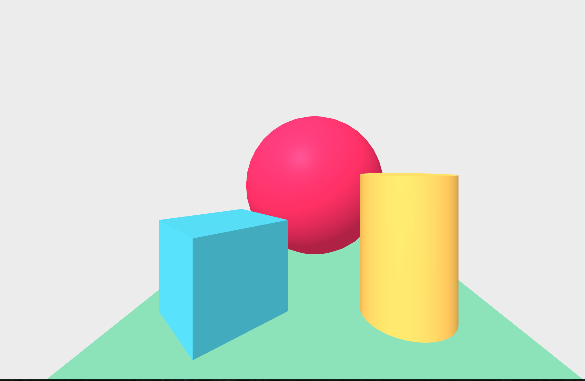
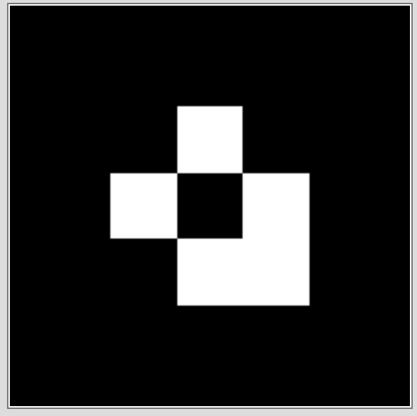

Contact me Anytime on twitter @jerome_etienne
All that in javascript in your browser :)
<script src="https://aframe.io/releases/0.4.0/aframe.min.js"></script>
<body>
<a-scene>
<a-box color="#6173F4" opacity="0.8" depth="2"></a-box>
<a-sphere radius="2" src="texture.png" position="1 1 0"></a-sphere>
<a-sky color="#ECECEC"></a-sky>
</a-scene>
</body>
Here is a basic scene in A-Frame
<!-- We define a scene -->
<a-scene>
<!-- add a box in the scene -->
<a-box></a-box>
<!-- add a basic camera -->
<a-entity camera></a-entity>
</a-scene>Simple enougth :)
Now we add artoolkit in the scene and create a marker
<!-- We define a scene -->
<a-scene artoolkit>
<!-- we put the content into a markers -->
<a-marker>
<a-box></a-box>
<a-marker>
<!-- add a basic camera -->
<a-entity camera></a-entity>
</a-scene>That's it!
Directly extracted from artoolkit
<!-- We define a scene -->
<a-scene artoolkit='detectionMode: mono_matrix; sourceType: webcam;'>
<!-- here, put the content of your scene -->
</a-scene>Detect matrix markers from your webcam.
Require to have matrix in the detection mode
<a-marker type='pattern' url='data/patt.hiro' >
<!-- here put your content -->
</a-marker>Require to have matrix in the detection mode
<a-marker type='barcode' value='20' >
<!-- here put your content -->
</a-marker>
Your mileage may vary
Up to you to choose according to your own needs :)
More power available for artoolkit to detect markers